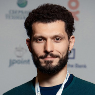

Прошедшие встречи
Доклады встречи:
При поддержке Naumen 5 октября 2017 г. состоялась девятая встреча JUG.EKB!
Официальная часть длилась больше 2 часов, за это время более участники послушали 2 доклада, задали все интересующие вопросы, а также обсудили подробности с докладчиками в кулуарах. Ведущим восьмой встречи стал Андрей Чернопрудов (Naumen Service Desk).
Ярослав Киселев (КРОК, г. Москва) - "Application Performance Monitoring: сравнение возможностей, проблемы и решения"
Дмитрий Чуйко (BellSoft, г. Санкт-Петербург) - "Организация многопоточности по модели подписки в Java 9"
После официальной части все желающие смогли посетить afterparty и пообщаться со спикерами в неформальной обстановке.
Фото: https://vk.com/album-61807294_247477736
До встречи на следующей встрече сообщества JUG.EKB!
Восьмая встреча JUG.EKB
В Екатеринбурге при поддержке Naumen 3 марта 2017 г. состоялась восьмая встреча JUG.EKB!
Официальная часть длилась около 3 часов, за это время более 70 участников успели прослушать 2 доклада, задать все интересующие вопросы, а также обсудить подробности с докладчиками в кулуарах. Ведущим восьмой встречи традиционно был Олег Хромов (Naumen, Департамент проектов в гос.секторе).
Первым свой доклад делал Александр Мохов (Naumen, г. Екатеринбург) на тему «G1 GC: опыт миграции».
Второй доклад сделали спикеры – Александр Тарасов (Одноклассники, г. Москва) и Кирилл Толкачёв (Альфа-Лаборатория, г. Москва) на тему «Микросервисы — Огонь, Вода и Медные трубы». Кстати, Александр и Кирилл в пятницу выступили с этим докладом в офисе Naumen.
После официальной части все желающие смогли посетить afterparty и пообщаться со спикерами в неформальной обстановке.
Фото: https://vk.com/album-61807294_241806322
До встречи на следующей встрече сообщества JUG.EKB!
Седьмая встреча JUG.EKB
Седьмая встреча JUG.EKB прошла 22 сентября в Коворкинге "Соль".
Доклады:

Escape Analysis и скаляризация
Работает с Java уже около 10 лет, начиная еще с версии 1.1. Вел разработку и клиентских и серверных приложений. В последние годы разрабатывал систему имитационного моделирования в Яндексе. В настоящее время занимается оптимизацией систем электронных торгов в Deutsche Bank.
В высокопроизводительных приложениях аллокация нередко становится одним из узких мест — если не непосредственно, то через увеличение нагрузки на GC. Написание же garbage-less кода в джаве требует нетривиальных усилий, код становится сложнее и менее понятным. Современные JIT-ы умеют, в некоторых случаях, самостоятельно стирать аллокации короткоживущих объектов, превращая их поля в набор эквивалентных локальных переменных. Эта оптимизация (скаляризация) появилась еще в версии 1.6, и с тех пор прошло уже 7 лет, но в открытых источниках удивительно мало деталей — где и когда эта оптимизация срабатывает, а где не срабатывает, насколько надежно она работает, и что может ей помешать.
"Доклад построен вокруг набора практических примеров, на которых, как на кошках, я изучал сильные и слабые стороны текущей реализации. В итоге, я надеюсь, у вас в репертуаре появится альтернативный способ создания garbage-less кода, не за счет ручного устранения аллокаций, а за счет использования более JIT-friendly аллокаций".
Ahead of time компиляция для Hotspot
Performance-инженер в Oracle. Более 10 лет опыта в различных компаниях, включая Borland, Yota, QuickOffice и Deutsche Bank.
Существуют различные реализации Java. В некотрых из них есть ahead-of-time (AOT) компиляторы, причём подход к решению различный, да и постановка задачи разная. В Hotspot есть JIT‑компиляция, но нет стандартного AOT. Не обязательно, что так будет всегда. Мы поговорим о том, зачем может понадобится заранее получать нативный код, как это делается и работает в реализации для Hotspot. И с другой стороны, как Java-код может встраиваться в процесс JIT‑компиляции.
Шестая встреча JUG.EKB
Шестая встреча JUG.EKB прошла 11 февраля в Коворкинге "Соль".
Доклады:
Что должен знать о сетях каждый Java разработчик?
Алексей специализируется на разработке высоконагруженных распределённых систем на платформе Java. За более чем 10 лет в индустрии он собрал опыт разработки информационных систем в таких вертикалях как финансы, телеком, e-commerce и здравоохранение. С 2009 по 2011 возглавлял практику внедрения in-memory data grid решений в компании GridDynamics. В октябре 2011 года перешёл в Deustche Bank, где является ведущим специалистом в области технологий распределённого кэширования. Активный участник российских конференций, посвящённых разработке программного обеспечения и высокопроизводительных информационным системам.
Протокол TCP существует уже более 30 лет. Сетевые коммуникации являются неотъемлемой частью практически любого современного приложения. Тем не менее, сетевое программирование продолжает оставаться зоной проблем и опасностей. Но несмотря на простой интерфейс, программирование "сокетов" далеко не простая задача. Тема этого доклада "правильное" использование TCP/IP и Java socket API. Знаете ли вы что происходит при закрытии сокета? Как опции TCP влияют на производительность? Какие исключения может кидать сокет в Java? - Не уверены, тогда этот доклад для вас.
Kotlin + Android: практический ликбез
Дмитрий Полищук - разработчик Яндекс.Такси. Занимается разработкой программного обеспечения уже 10 лет, в основном встраиваемыми и мобильными приложениями. Под Android пишет с момента выхода самого первого SDK. Пришёл в Яндекс в 2015 году, участвует в разработке Такси и других интересных проектов.
Весь мир ждет выхода первой версии нового языка программирования от JetBrains под названием Kotlin. Но в мире мобильной разработки под Android мы ожидаем его с еще большим трепетом. Этот язык уже сейчас решает большое количество наших задач, которые стандартными средствами решаются не очень красиво или нетривиально. Используя стандартную библиотеку языка Kotlin мы освобождаемся от всего того багажа утильных библиотек на java которые мы были вынуждены таскать из проекта в проект. У Kotlin отличный потенциал для разработки в реактивной парадигме, которая сейчас постоянно набирает популярность во всей индустрии и в том числе в разработке мобильных приложений. Но т.к. язык новый и сообщество очень молодое, то все шишки еще не набиты. Я расскажу про подводные камни при написании UI, реактивного программирования, DI и почему уже даже сейчас можно переходить с Java на Kotlin для Android. Доклад будет интересен не только мобильным разработчикам, но и всем, кто интересуется современными JVM языками.
Оптимизация GWT приложений
Андрей является экспертом в области разработки приложений на Java, опыт разработки 9 лет. Имеет ученую степень кандидата наук на стыке математики и программирования. Андрей - главный инженер-программист Naumen, руководитель Челябинской группы разработки, занимается вопросами развития и оптимизации Naumen Service Desk 4.
GWT позволяет писать клиентский код на Java, при этом трансляция Java в Java Script происходит автоматически. Но есть различные особенности и подводные камни, которые нужно учитывать при разработке.
В своем рассказе Андрей поделится опытом оптимизации и тюнинга GWT приложения.
Будут затронуты следующие вопросы:
- анализ объема клиентского кода приложения
- минимификация и оптимизация через ключи компиляции GWT
- сравнение разрешения зависимостей в рантайме и на этапе компиляции
- разделение клиентского кода на части и их отложенная подгрузка
Пятая встреча JUG.EKB
Пятая встреча JUG.EKB прошла 1 октября в Коворкинге "Соль".
Доклады:
Нужен ли нам JMS в мире современных Java-технологий?
Николай является экспертом в разработке приложений на Java и управлении командами. Имея опыт разработки более 10 лет,специализируется на разработке сложных распределённых масштабируемых систем. Более 6 лет Николай работает с Agile методологиями. На текущий момент практикующий технический лидер и Scrum Master. Алименков Николай имеет большой опыт в применении инженерных практик (TDD, CI, юнит тестирование, т.д.).
Николай – активный участник и докладчик на международных конференциях. Организатор и идеолог конференций Selenium Camp, JEEConf, XP Days Ukraine и IT Brunch. Создатель «Клуба анонимных разработчиков». Также он является активным членом сообщества Agile Ukraine.
JMS известен в Java-мире как стандартное решение для реализации распределенной работы с помощью обмена сообщениями. Существует множество JMS провайдеров, как бесплатных, так и коммерческих. Большой процент разработчиков используют JMS везде, где нужно послать сообщение и обработать его на другом конце. Но существует множество альтернативных решений организовать эффективные очереди сообщений: AMQP, Redis, ZooKeeper, Apache Kafka или даже самописные очереди на Cassandra. Почему не использовать их вместо JMS?
В этом докладе мы обсудим краеугольные проблемы любой распределенной системы, основанной на обмене сообщениями, и уже с этими знаниями взглянем еще разок на JMS и альтернативы с точки зрения практических сценариев из реальной жизни.
Yet another technology stack in web-app development
Григорий ведущий инженер-программист СКБ Контур, руководитель группы разработки Контур.Таможня.
При разработке web-приложений перед Java-разработчиками встаёт вопрос выбора технологий. Часто разработчики хотят остаться в Java/XML-мире, выбирая GWT или JSF. Я постараюсь предложить решение, которое бы выходило за рамки Java/XML-мира, сохранив его плюсы и устранив некоторые его минусы. В основе решения со стороны сервера лежат Spring Framework и FreeMarker, а со стороны клиента – AngularJS и TypeScript. На докладе я расскажу про применение MVC одновременно на клиенте и сервере, двухуровневую шаблонизацию, особенность использования TypeScript.
Четвертая встреча JUG.EKB
Четвертая встреча JUG.EKB прошла 14 мая в Коворкинге "Соль".
Доклады:
Разработка высоконагруженного сервера на Java
Может ли один сервер на Java обрабатывать десятки тысяч запросов в секунду, принимать сотни тысяч подключений и отдавать гигабиты трафика?
Где-где, а в компании Одноклассники точно знают, как этого добиться, ведь у них на Java работают свыше 8000 серверов, обслуживая 48 млн пользователей ежедневно.
Андрей Паньгин, ведущий программист компании, расскажет про приёмы разработки высоконагруженных приложений.
Из доклада вы узнаете, в чём недостатки стандартного сетевого Java API, почему возникают JVM паузы, зачем вылезать за пределы Java Heap и как реализовать эффективный механизм удалённых вызов.
Будут затронуты вопросы I/O, кеширования, сериализации и межсерверного взаимодействия.
10 человеко-лет GWT
Данный доклад посвящен набору инструментов Web-разработки Google Web Toolkit. В своем рассказе я сделаю краткий обзор возможностей GWT, и поделюсь опытом разработки проекта на GWT объемом 10+ человеко-лет. Из доклада Вы узнаете о том:
- что делать если стандартного протокола RPC недостаточно
- как лучше организовать backend для GWT
- совместная работа GWT с javascript
- как добавить новые возможности в GWT
- анализ unhandled exceptions
- тюнинг процесса сборки GWT-проекта
Третья встреча JUG.EKB
Третья встреча JUG.EKB прошла 13 ноября в Коворкинге "Соль".
Доклады:

Динамическая (JIT) компиляция в JVM
Java абстрагирует большое количество технических деталей о платформе, на которой исполняется Java-приложение. получить приемлемую скорость исполнения, Java-платформа активно использует динамическую компиляцию в виртуальной Java-машине (JVM). Динамическая (Just-In-Time) компиляция повышает производительность за счет трансляции Java байткода в машинный код в процессе работы приложения. Принцип работы существенно отличается от статических компиляторов и для получения высокопроизводительного кода JVM использует другой набор методик компиляции. В докладе будут описаны общие принципы динамической компиляции и ее особенности в применении к Java. Обзор JIT-компиляторов в HotSpot JVM будет включать рассмотрение инструментов и методик анализа их работы (от высокоуровневых решений и до машинного кода) и диагностирования проблем.

Наскальное программирование
Евгений Пальмов из Naumen
Платформа Java уже давно доказала своё право находиться на лидирующих позициях рынка, зарекомендовав себя как отличную основу для разработки проектов любого калибра. Однако есть ли жизнь после Java? А может быть Scala? В докладе будут рассмотрены основные возможности Scala, от самых основ и до метапрограммирования на макросах, а также как она предлагает с их помощью красиво и просто решать распространенные проблемы в Java, при этом повышая общее качество и скорость написания кода.
Вторая встреча JUG.EKB
Вторая встреча JUG.EKB прошла 29 июля в Коворгинге "Соль" (переулок Химиков, 3, 4 этаж ).
Доклады:
Миллионы котировок в секунду на чистой Java
Доклад будет сконцентрирован на тех решениях и подходах, которые, исходя из реального опыта, позволяют достичь разумный компромисс между производительностью и сложностью, что во многом и обуславливает выбор платформы Java. Реальное сравнение с классическими поставщиками данных, имеющих десятилетнюю историю развития и поддержки своего программного обеспечения на языках низкого уровня, показывает что особенности Java не являются препятствием к созданию высокопроизводительных систем обработки данных, а скорее наоборот, позволяют догнать и обогнать конкурентов за счет наличия большего инструментария, увеличения продуктивности работы программистов, и упрощения отладки и поддержки.
Оковы тяжкие падут: как перевести сборку проекта с Ant на Gradle
Андрей Хитрин из Naumen
Платформа Java успешно прошла испытание временем, зарекомендовав себя в качестве основы для разработки
долгоживущих проектов. Однако, с возрастом у таких проектов накапливается немало недостатков. Одним из
них может являться устаревшая система сборки приложения.
Что следует делать, если Вы хотите избавиться от колоссальных по размерам и сложных в поддержке скриптов
Ant, которые используются для сборки Вашего приложения? Какие есть альтернативы? Какими преимуществами и
недостатками обладают эти альтернативы? Как не набить шишек при переводе проекта с Ant на какой-нибудь Gradle?
Первая встреча JUG.EKB
Первая встреча JUG.EKB прошла 15 мая во Freelance Cafe (ТЦ Мытный Двор, ул. 8 Марта, 8Д)
Доклады:
Практики тестирования кода
Я расскажу про способы борьбы с ошибками прямо из IDE, минуя стадию запуска приложения.
Как не наступить на грабли, внедряя скрипты в java приложение
Однажды вы решаете добавить динамики приложению и в вашем Java коде появляется Groovy, либо любой другой скриптовый язык. И Groovy приносит свою магию.
Сначала её мало, но затем её становится все больше и больше!
Вместе со скриптами появляется много вопросов - а если?, а как?, а почему?
А если я переименую этот класс? А как удобно писать скрипты? А почему скрипты сломались? И т.д.
Я расскажу как сделать так, чтобы написание скриптов приносило радость, их поддержка не была болью, а Groovy стал вашим лучшим другом!